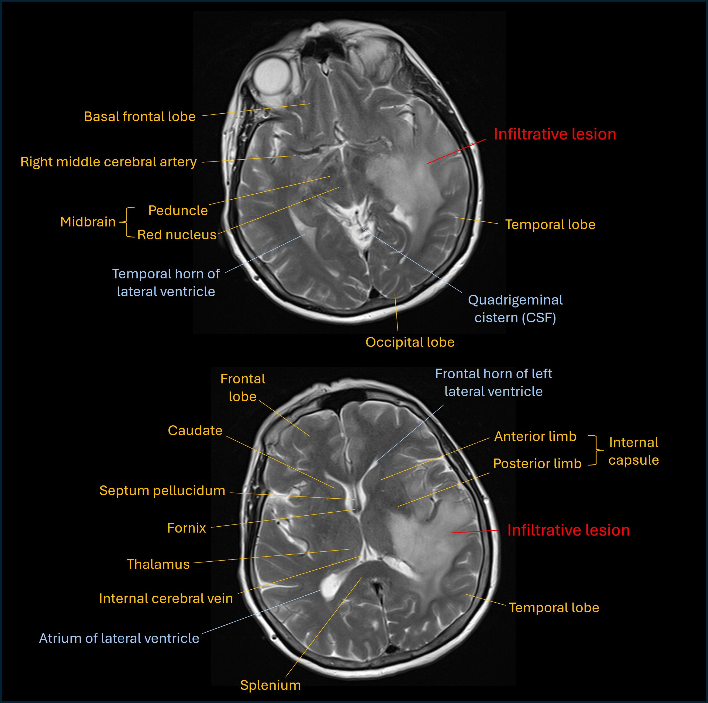
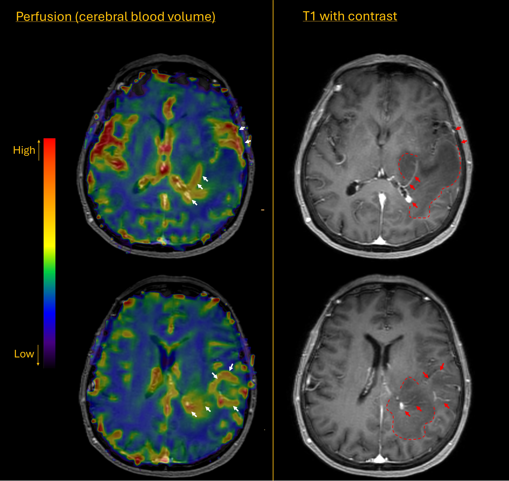

Case 11. Progressive communication difficulties
Outcome
An MRI showed an extensive left temporoparietal lesion with a degree of mass effect on adjacent cortex and with surrounding oedema. The lesion extended inferiorly to the thalamus and upper midbrain. T2 images are shown below.

The appearances suggested a low-grade lesion (likely glioma) with no contrast enhancement visible.
However, the rapid onset and progression raised concern for a higher-grade lesion - it was felt possible this could be a low grade lesion undergroing transformation to a higher-grade type.
Further imaging was arranged including perfusion studies. Unfortunately these suggested a high grade glioma. There had been a significant increase in tumour size in the short (4 week) interval between scans, and there were now areas of contrast enhancement (red arrows below) surrounding hypointense areas (dashed line) on the T1 images. The perfusion scan showed increased cerebral blood volume in the areas of contrast enhancement (white arrows), suggestive of neovascularity, a marker of high tumour grade.

She was treated with steroids. Resection was not an option given extensive infiltration of the tumour, including into the midbrain, basal ganglia and corpus callosum. The option of a surgical biopsy was discussed but the patient and her family elected against undergoing this.
In the following 2-3 months the patient deteriorated, with poor mobility, only able to make short transfers from bed to chair with assistance, and very limited communication, struggling even with ‘yes or no’ questions. Radiotherapy was felt not to be an option given her poor level of functioning and the likelihood of major side effects for little benefit.
She was managed conservatively and died 7 months after onset.
Final diagnosisHigh grade glioma infiltrating the left hemisphere and causing mixed dysphasia and a homonymous visual field defect.
Key points